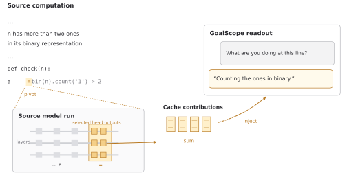
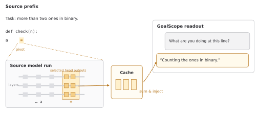

<!doctype html><meta charset="utf-8"><title>GoalScope model-run capture</title><style>body{max-width:1000px;margin:30px auto;font:15px system-ui;background:#f3f3f3}header,section{padding:24px;background:white;margin:20px 0}img{width:100%}a{color:#95651d}</style><header><h1>GoalScope · capture at the pivot inside the model run</h1><a href="all_options.pdf">Combined PDF</a> · <a href="captions.md">Caption</a></header><section><h2>U1 pivot magnification</h2><a href="U1_pivot_magnification.pdf">PDF</a> · <a href="U1_pivot_magnification.svg">SVG</a></section><section><h2>U2 model run to cache</h2><a href="U2_model_run_to_cache.pdf">PDF</a> · <a href="U2_model_run_to_cache.svg">SVG</a></section>